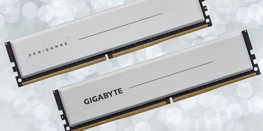

Apa Itu RAM Komputer dan Laptop?

RAM adalah akronim komputasi umum yang merupakan singkatan dari random-access memory.
Terkadang disebut memori PC atau memori saja. Pada dasarnya, RAM adalah memori jangka pendek komputer atau laptop. RAM adalah tempat penyimpanan data yang diperlukan prosesor komputer untuk menjalankan aplikasi dan membuka file Anda.
Di dalam komputer Anda, RAM biasanya hadir dalam bentuk papan sirkuit datar persegi dengan chip memori terpasang, yang juga disebut sebagai modul memori. Komputer biasanya dilengkapi dengan minimal dua modul RAM serta ruang untuk menambah lebih banyak lagi, jika diperlukan.
Modul RAM ini adalah komponen penting yang bekerja sama dengan central processing unit (CPU) komputer Anda dan harus bekerja secara optimal agar Anda mendapatkan pengalaman yang baik.
RAM adalah komponen yang harus ada di dalam komputer karena memiliki fungsi yang sangat krusial. Salah satu fungsi RAM adalah sebagai peningkatan kinerja perangkat yang sedang dipakai. Jadi anda akan merasa lebih nyaman ketika menggunakan perangkat yang daya muat RAM-nya lebih tinggi, karena akan lebih cepat dan responsif ketika menjalankan berbagai aplikasi. Oleh karena itu, sangat penting untuk mengetahui secara detail apa itu RAM dan cara kerjanya.